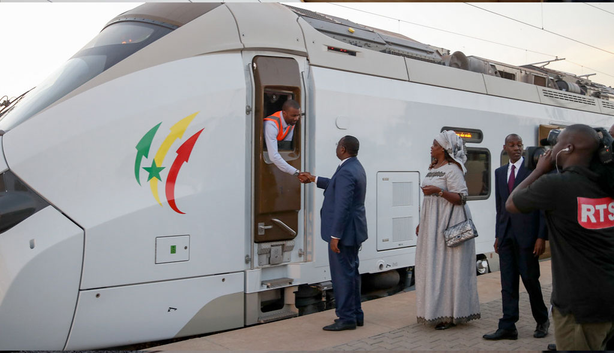

Au soir du six février 2022 à Yaoundé, tout un pays s’accroche au destin de leur équipe nationale. Au soir du finale, l’ombre d'un Sénégalais ne circule dans les rues, les regards et espoirs braqués sur la pelouse de Yaoundé, le Cameroun théâtre de la destinée d’un peuple. A 20 h, l’arbitre donne le coup d’envoi, les gladiateurs enfourchent leurs masques de lion de la teranga pour une bataille épique dans l’histoire du Sénégal. À la 94e minute, l’arbitre met fin au match, et au tableau d’affichage le Sénégal est devant.
L’arbitre siffle et le Sénégal gagne la coupe d’Afrique des nations.
Le rêve de tous les Sénégalais et de toutes les générations serait de voir ce récit se réaliser.
À nos lions, nous ne pouvons que dire bonne chance.
Les lions de Youssou Ndour
Les articles du jour
Aliou Cissé, plus grand coach de l'histoire du Sénégal?
Aliou Cissé, le sélectionneur de l'équipe nationale du Sénégal, est entré dans l'histoire du football de son pays.
La finale de ce vendredi opposant le Sénégal à l'Algérie est un match crucial pour sa carrière.
En cas de victoire des Lions, Cissé sera le coach le plus titré du Sénégal car il deviendra le premier à remporter le trophée continental.
Et même en cas de défaite, ce sera seulement la deuxième fois de l'histoire que le pays aura occupé la deuxième place dans cette Il a su imposer une discipline militaire à ses joueurs qui le surnomme Yahya Jammeh,
du nom de l'ancien homme fort de la Gambie, en exil depuis 2017 en Guinée Equatoriale., ce qui reste un exploit.
Très bon palmarès
Selon la Fédération sénégalaise de football, en 45 matches joués, il a totalisé 28 victoires, concédé 11 matches nuls et subi 5 défaites.
Aliou Cissé est aussi l'homme des records. 17 ans après, il propulse le Sénégal en finale de la Coupe d'Afrique des Nations (CAN).
En effet, en 2004, les Lions dont il était le capitaine avaient perdu aux tirs aux buts face aux Lions indomptables du Cameroun (0-0, 2-3). Avant cette qualification acquise dimanche,
l'ancien capitaine de la génération 2002 avait déjà réalisé la prouesse de qualifier le Sénégal en demi-finale, après 13 ans d'absence et en quart de finale lors de la précédente CAN 2017 organisée par le Gabon.
Sur le plan international, Aliou Cissé a réussi à se hisser au niveau du légendaire Bruno Metsu en faisant qualifier le Sénégal au Mondial russe de 2018.
Coach du Sénégal à 38 Ans
Depuis 2015, l'ancien milieu de terrain international, Aliou Cissé dirige l'équipe du Sénégal.
Sélectionné 35 fois en tant que joueur, Cissé avait succédé à Alain Giresse comme coach. A l'époque, il était entraineur adjoint de l'équipe olympique de football sénégalaise aux jeux olympiques de Londres en 2012.
Au mondial 2018 en Russie, il a eu la première victoire d'une équipe africaine en venant à bout de la Pologne (1-2). Seul entraineur noir de la Coupe du Monde en Russie, il était avec Nabil Mahloul de la Tunisie, le seul coach africain de la compétition.
"C'est bien que je sois le seul entraîneur noir de cette coupe du monde, même si c'est un sujet qui me gêne.
Aujourd'hui, le football est universel et je crois que la couleur de la peau n'a pas d'importance mais le constater montre qu'on a des entraîneurs de qualité sur le continent", avait -il déclaré à la BBC.
Les articles du jour

Dakar: le premier TER africain entre en service
Nous avons assisté aux derniers préparatifs de l'entrée en service en début d'année 2022 du TER de Dakar qui transportera 115.000 personnes par jour. Sept ans de travaux pour désengorger une capitale aux incroyables embouteillages. C'est l'histoire d'un train de banlieue qui répondait au joli nom de Petit train bleu. Créé en 1987, il desservait toute la périphérie ouest de Dakar, transportant jusqu'à 20.000 personnes par jour entre la capitale et Rufisque. Il roulait sur les anciennes voies métriques qui reliaient cette ville à Bamako, soit une double voie de 27 km où les trains étaient tractés par des locomotives diesel. Exploité par l'État sénégalais, le service a été totalement arrêté en 2020, la société du PTB se transformant en GTS – Grands Trains du Sénégal. Mais, pour résoudre les embouteillages apoplectiques de Dakar, l'Etat s'est résolu à lancer un appel d'offres pour rouvrir la voie ferrée qui s'est avérée être la seule solution pour désengorger l'actuelle autoroute A1.
En effet, Dakar est situé sur une presqu'île. Son agglomération, de plus de trois millions
d'habitants, accueille chaque année environ 100.000 résidants supplémentaires. Les bouchons y sont incommensurables et
imprévisibles. En 2014, l'État sénégalais a donc lancé les premières études et les travaux d'ouvrage et de voirie ont
été réalisés pour construire une double voie d'un écartement de 1,435m, selon le standard de 60% des voies de chemin de
fer dans le monde, tout en gardant un troisième rail d'un mètre d'écartement, pour permettre les circulations fret sur l'ancien
réseau. À certains endroits, l'État a dû procéder à des libéralisations d'emprise pour dégager le passage et permettre à ce train
moderne et électrifié de rouler. Tout au long de son parcours, la voie a été protégée par des grillages et des murs afin d'éviter
les incursions d'animaux et de personnes. À partir de 2017 la construction de la voie a commencé. Elle a été confiée au consortium
franco-turco-sénégalais qui réunit Eiffage, Yapi Merkezi et la Compagnie sahélienne d'entreprises (CSE). La conception et la réalisation
des systèmes ont été réalisées par Engie et Thales, dotant ce train d'une signalisation embarquée ERTMS2 que l'Europe commence tout juste à installer sur ses trains de banlieue.
Les 15 rames Coradia Régiolis comportant quatre voitures ont été commandées à Alstom qui les a fabriquées à Reichshoffen en Alsace. Ces voitures ont ensuite été séparées les unes des autres pour être transportées par bateau puis par
convoi exceptionnel, jusqu'au centre de maintenance de Colobane où elles ont été à nouveau assemblées par les équipes locales d'Alstom. «Il ne se sera écoulé que sept ans entre la décision politique et la mise en service, ce qui est exceptionnel pour une réalisation de cette envergure» explique Stéphane Volant le Président de la Seter insistant sur «la qualité du savoir faire francais en matière ferroviaire qui est reconnue mondialement,».
Les équipes de conducteurs, d'agents du service voyageurs, de mainteneurs – plus de 950 employés ont été recrutés et formées par la SETER – Société d'Exploitation du TER de Dakar – qui va assurer l'exploitation du TER. Filiale à 100% de la SNCF, la SETER devrait passer dans le giron de Kéolis courant 2022. « Nous avons eu des taux de réussite, supérieurs à ceux que l'on connaît en France, qui ont rendu possibles des transferts de savoir-faire plus rapide qu'initialement envisagés » se félicite Frédéric Bardenet, le DG de la SETER. Ce train qui pourra faire des pointes à 160km/h aura un cadencement de 10 minutes en semaine, et de 15 à 20 minutes le week-end. Pour éviter d'être taxé de «train des riches» comme en 2010 avec le Gautrain en Afrique du Sud, le prix des billets d'un aller simple sera modulé en trois zones selon la distance et pour effectuer de bout en bout les 36 km de ce premier tronçon, il faudra débourser environ 2 euros. La deuxième phase du tronçon, qui doit relier Diamniadio au nouvel aéroport, devrait ouvrir fin 2023 / début 2024 avec 19 km supplémentaires de voies. Elle permettra de rejoindre le centre-ville en moins d'une heure. Ce trajet desservira 14 gares dont la superbe gare de Dakar, construite en 1914, et qui a été complètement désossée par Eiffage pour conserver son étonnante structure en métal qui ne supportait plus le poids du bâti, ainsi que la nouvelle gare aux allures très futuristes de Diamniadio…